Introduction to Databases
Concept of a Database
A database is a collection of data and a set of rules that organize the data by specifying certain relationships among the data.
The user describes a logical format for the data.
The precise physical format of the file is of no concern to the user
A database administrator is a person who defines the rules that organize the data and also controls who should have access to what parts of the data.
The user interacts with the database through a program called
a database manager or a database management system (DBMS), informally known as a front end.
3
Components of Databases
Record – contain one related group of data
Each record contains fields or elements
The logical structure of a database is called a schema
A particular user may have access to only part of the database, called a subschema
Adams
212 Market St.
Columbus
OH
43210
Benchly
501 Union St.
Chicago
IL
60603
Carter
411 Elm St.
Columbus
OH
43210
4
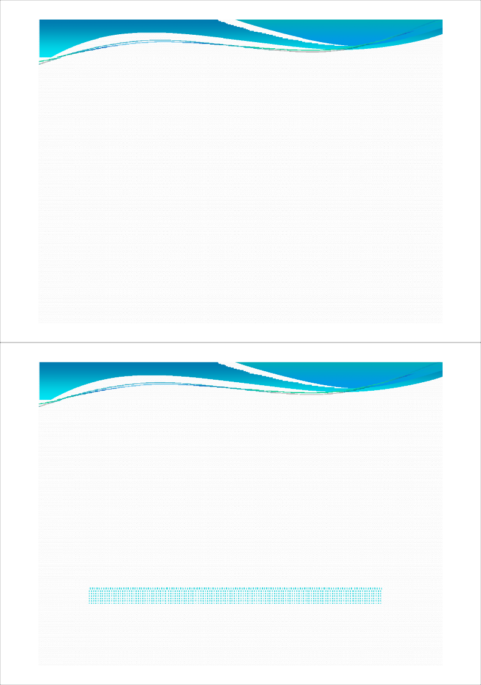
Related Parts of a Database
Schema of Database
Name First Address City State Zip Airport Adams Charles 212 Market St. Columbus OH 43210 CMH Adams Edward 212 Market St. Columbus OH 43210 CMH Benchly Zeke 501 Union St. Chicago IL 60603 ORD Carter Marlene 411 Elm St. Columbus OH 43210 CMH Carter Beth 411 Elm St. Columbus OH 43210 CMH Carter Ben 411 Elm St. Columbus OH 43210 CMH Carter Elisabeth 411 Elm St. Columbus OH 43210 CMH Carter Mary 411 Elm St. Columbus OH 43210 CMH
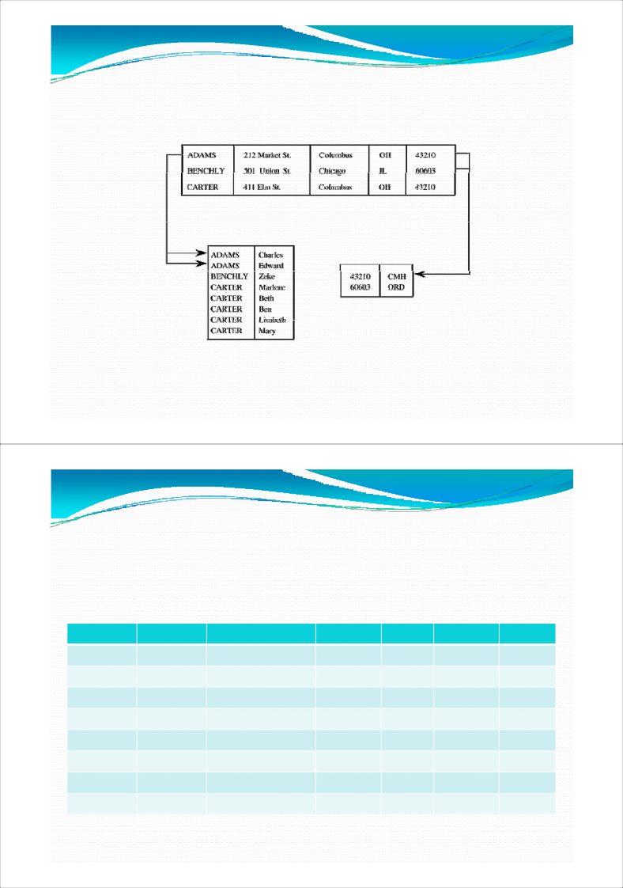
The name of each column is called an attribute of the database
A relation is a set of columns
Table 6-3. Relation in a Database.
Namee
Zip
ADAMS
43210
BENCHLY
60603
CARTER
43210
Queries
Users interact with database managers through commands to the DBMS that retrieve, modify, add, or delete fields and records of the database.
A command is called a query.
For example,
SELECT NAME = 'ADAMS'
8
Queries (Cont’d)
The result of executing a query is a subschema.
For example, we might select records in which ZIP=43210
Result of Select Query
Name
First
Address
City
State
Zip
Airport
ADAMS
Charles
212 Market St.
Columbus
OH
43210
CMH
ADAMS
Edward
212 Market St.
Columbus
OH
43210
CMH
CARTER
Marlene
411 Elm St.
Columbus
OH
43210
CMH
CARTER
Beth
411 Elm St.
Columbus
OH
43210
CMH
CARTER
Ben
411 Elm St.
Columbus
OH
43210
CMH
CARTER
Lisabeth
411 Elm St.
Columbus
OH
43210
CMH
CARTER
Mary
411 Elm St.
Columbus
OH
43210
CMH
9
Queries (Cont’d)
Other, more complex, selection criteria are possible, with logical operators such as and (∧) and or (∨), and comparisons such as less than (<).
An example of a select query is
SELECT (ZIP='43210') ∧ (NAME='ADAMS')
10
Queries (Cont’d)
After having selected records, we may project these records onto one or more attributes.
The select operation identifies certain rows from the database
A project operation extracts the values from certain fields (columns) of those records.
For example, we might
Select records meeting the condition ZIP=43210
Project the results onto the attributes NAME and FIRST,
11
Mary
CARTER
Lisabeth
CARTER
Ben
CARTER
Beth
CARTER
Marlene
CARTER
Edward
ADAMS
Charles
ADAMS
Results of Select-Project Query
12
Queries (Cont’d)
Notice that we do not have to project onto the same attribute(s) on which the selection is done. For example, we can build a query using ZIP and NAME but project the result onto FIRST:
SHOW FIRST WHERE (ZIP='43210') ∧ (NAME='ADAMS')
The result would be a list of the first names of people whose last names are ADAMS and ZIP is 43210.
13
Queries (Cont’d)
We can also merge two subschema on a common element by using a join query.
14
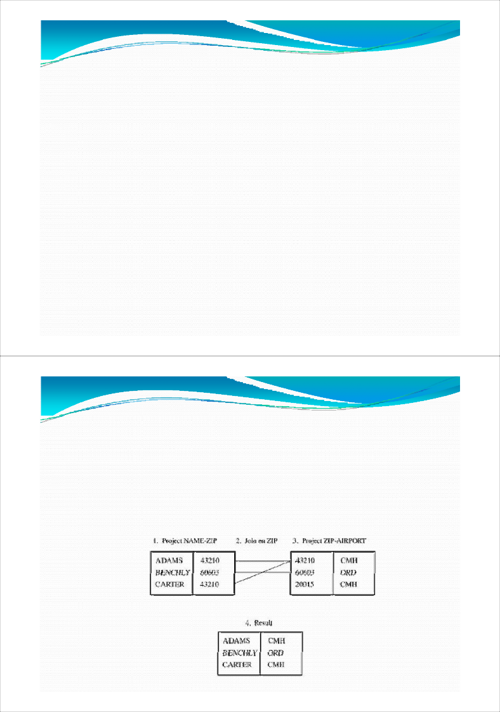
Advantage of Using Databases
A database is a single collection of data, stored and maintained at one central location, to which many people may have access as needed
The users are unaware of the physical arrangements; the unified logical arrangement is all they see
15
Advantage of Using Databases
Shared access – users use one common, centralized set of data
Minimal redundancy – users do not have to collect and maintain their own sets of data
Data consistency – change to a data value affects all users of the data value
Data integrity – data values are protected against accidental or malicious undesirable changes
Controlled access – only authorized users are allowed to view or to modify data values
16
Security Requirements
A list of requirements for database security.
Physical database integrity.
The data of a database are immune to physical problems, such as power failures, and someone can reconstruct the database if it is destroyed through a catastrophe.
Logical database integrity.
The structure of the database is preserved. With logical integrity of a database, a modification to the value of one field does not affect other fields, for example.
17
A list of requirements for database security. (Cont’d)
Element integrity.
The data contained in each element are accurate.
Auditability.
It is possible to track who or what has accessed (or modified) the elements in the database.
Access control.
A user is allowed to access only authorized data, and different users can be restricted to different modes of access (such as read or write).
18

A list of requirements for database security. (Cont’d)
User authentication.
Every user is positively identified, both for the audit trail and for permission to access certain data.
Availability.
Users can access the database in general and all the data for which they are authorized.
19
Integrity of the Database
Two situations can affect the integrity of a database:
when the whole database is damaged
when individual data items are unreadable.
Integrity of the database as a whole is the responsibility of
The DBMS
The operating system
The (human) computing system manager.
20
Integrity of the Database (Cont’d)
Sometimes it is important to be able to reconstruct the database at the point of a failure.
The DBMS must maintain a log of transactions.
The system can obtain accurate account balances by reverting to a backup copy of the database and reprocessing all later transactions from the log.
21
Element Integrity
The integrity of database elements is their correctness or accuracy.
This corrective action can be taken in three ways .
Field checks - activities that test for appropriate values in a position.
Access control
A change log - A change log lists every change made to the database; it contains both original and modified values. Using this log, a database administrator can undo any changes that were made in error.
22
Auditability
For some applications it may be desirable to generate an audit record of all access (read or write) to a database.
Such a record can help to maintain the database's integrity, or at least to discover after the fact who had affected which values and when.
23
Access Control
Databases are often separated logically by user access privileges.
User Authentication
The DBMS can require rigorous user authentication.
A DBMS might insist that a user pass both specific password and time-of-day checks.
This authentication supplements the authentication performed by the operating system.
24
Availability
Integrity/Confidentiality/Availability – Computer Security
Integrity is a major concern in the design of database management systems.
Confidentiality is a key issue with databases because of the inference problem,
availability is important because of the shared access motivation underlying database development.
25
Reliability and Integrity
Databases amalgamate data from many sources, and users expect a DBMS to provide access to the data in a reliable way.
Reliability - mean that the software runs for very long periods of time without failing.
26
Database concerns about reliability and integrity can be viewed from three dimensions:
Database integrity: concern that the database as a whole is protected against damage
Element integrity: concern that the value of a specific data element is written or changed only by authorized users.
Element accuracy: concern that only correct values are written into the elements of a database.
27
Protection Features from the Operating System
A responsible system administrator backs up the files of a database periodically along with other user files.
The files are protected during normal execution against
outside access by the operating system's standard access control facilities.
Finally, the operating system performs certain integrity checks for all data as a part of normal read and write operations for I/O devices.
28
Two-Phase Update
A serious problem for a database manager is the failure of the computing system in the middle of modifying data.
If the data item to be modified was a long field, half of the field might show the new value, while the other half would contain the old.
29
Two-Phase Update (Cont’d)
Update Technique
The intent phase - the DBMS gathers the resources it needs to perform the update
Committing, involves the writing of a commit flag to the database. The commit flag means that the DBMS has passed the point of no return: After committing, the DBMS begins making permanent changes.
30
Two-Phase Update (Cont’d)
Example
The stockroom checks the database to determine that 50 boxes of paper clips are on hand. If not, the requisition is rejected and the transaction is finished.
If enough paper clips are in stock, the stockroom deducts 50 from the inventory figure in the database (107 - 50 = 57).
The stockroom charges accounting's supplies budget (also in the database) for 50 boxes of paper clips.
31
Two-Phase Update (Cont’d)
Example (Cont’d)
The stockroom checks its remaining quantity on hand (57) to determine whether the remaining quantity is below the reorder point. Because it is, a notice to order more paper clips is generated, and the item is flagged as "on order" in the database.
A delivery order is prepared, enabling 50 boxes of paper clips to be sent to accounting.
All five of these steps must be completed in the order listed for the database to be accurate and for the transaction to be processed correctly.
32
Two-Phase Update (Cont’d)
Example (Cont’d)
When a two-phase commit is used, shadow values are maintained for key data points. A shadow data value is computed and stored locally during the intent phase, and it is copied to the actual database during the commit phase.
33
Two-Phase Update (Cont’d)
Example (Cont’d)
Intent:
Check the value of COMMIT-FLAG in the database. If it is set, this phase cannot be performed. Halt or loop, checking COMMIT-FLAG until it is not set.
Compare number of boxes of paper clips on hand to number requisitioned; if more are requisitioned than are on hand, halt.
Compute TCLIPS = ONHAND - REQUISITION.
Obtain BUDGET, the current supplies budget remaining for accounting department. Compute TBUDGET = BUDGET - COST, where COST is the cost of 50 boxes of clips.
Check whether TCLIPS is below reorder point; if so, set TREORDER = TRUE; else set TREORDER = FALSE
34
Two-Phase Update (Cont’d)
Example (Cont’d)
Commit:
Set COMMIT-FLAG in database.
Copy TCLIPS to CLIPS in database.
Copy TBUDGET to BUDGET in database.
Copy TREORDER to REORDER in database.
Prepare notice to deliver paper clips to accounting department. Indicate transaction completed in log.
Unset COMMIT-FLAG.
35
Redundancy/Internal Consistency
Error Detection and Correction Codes
Shadow Fields
Entire attributes or entire records can be duplicated in a database. If the data are irreproducible, this second copy can provide an immediate replacement if an error is detected.
36
Recovery
In addition to these error correction processes, a DBMS can maintain a log of user accesses, particularly changes. In the event of a failure, the database is reloaded from a backup copy and all later changes are then applied from the audit log.
37
Concurrency/Consistency
Database systems are often multiuser systems.
If both users try to modify the same data items, we often assume that there is no conflict because each knows what to write; the value to be written does not depend on the previous value of the data item. However, this supposition is not quite accurate.
38
Concurrency/Consistency (Cont’d)
E.g.,
Agent A submits the update command
SELECT (SEAT-NO = '11D') ASSIGN 'MOCK, E' TO PASSENGER-NAME
while Agent B submits the update sequence
SELECT (SEAT-NO = '11D') ASSIGN 'EHLERS, P' TO PASSENGER-NAME
To resolve this problem, a DBMS treats the entire queryupdate cycle as a single atomic operation.
39
Monitors
The monitor is the unit of a DBMS responsible for the structural integrity of the database.
Forms of monitors
Range Comparisons
A range comparison monitor tests each new value to ensure that the value is within an acceptable range
Filters or patterns are more general types of data form checks.
State constraints describe the condition of the entire database.
Transition constraints describe conditions necessary before changes can be applied to a database.
40
Sensitive Data
Sensitive data are data that should not be made public.
There exist cases that some but not all of the elements in the database are sensitive.
There may be varying degrees of sensitivity.
41
Several factors can make data sensitive.
Inherently sensitive.
The value itself may be so revealing that it is sensitive. Examples are the locations of defensive missiles.
From a sensitive source.
The source of the data may indicate a need for confidentiality. An example is information from an informer whose identity would be compromised if the information were disclosed.
42
Several factors can make data sensitive (Cont’d)
Declared sensitive.
The database administrator or the owner of the data may have declared the data to be sensitive.
Part of a sensitive attribute or a sensitive record.
In a database, an entire attribute or record may be classified as sensitive.
Sensitive in relation to previously disclosed information.
Some data become sensitive in the presence of other data.
For example, the longitude coordinate of a secret gold mine reveals little, but the longitude coordinate in conjunction with the latitude coordinate pinpoints the mine.
43
Access Decisions
The DBMS may consider several factors when deciding whether to permit an access.
Availability of the data
Acceptability of the access
Authenticity of the user.
44
Access Decisions (Cont’d)
Availability of Data
One or more required elements may be inaccessible.
For example, if a user is updating several fields, other users' accesses to those fields must be blocked temporarily. This blocking ensures that users do not receive inaccurate information
Acceptability of Access
One or more values of the record may be sensitive and not accessible by the general user. A DBMS should not release sensitive data to unauthorized individuals.
45
Access Decisions (Cont’d)
Assurance of Authenticity
Certain characteristics of the user external to the database may also be considered when permitting access.
For example, to enhance security, the database administrator may permit someone to access the database only at certain times, such as during working hours.
46
Access Decisions (Cont’d)
Types of Disclosures
Exact Data - The most serious disclosure is the exact value of a sensitive data item itself
Bounds - Another exposure is disclosing bounds on a sensitive value; that is, indicating that a sensitive value, y, is between two values, L and H.
Negative Result - Sometimes we can word a query to determine a negative result. That is, we can learn that z is not the value of y.
Existence - The existence of data is itself a sensitive piece of data.
47
Access Decisions (Cont’d)
Types of Disclosures (Cont’d)
Probable Value - it may be possible to determine the probability that a certain element has a certain value.
48
Security versus Precision
49
Inference
Inference is a way to infer or derive sensitive data from nonsensitive
data.
Sample Database
Name
Sex
Race
Aid
Fines
Drugs
Dorm
Adams
M
C
5000
45.
1
Holmes
Bailey
M
B
0
0.
0
Grey
Chin
F
A
3000
20.
0
West
Dewitt
M
B
1000
35.
3
Grey
Earhart
F
C
2000
95.
1
Holmes
Fein
F
C
1000
15.
0
West
Groff
M
C
4000
0.
3
West
Hill
F
B
5000
10.
2
Holmes
Koch
F
C
0
0.
1
West
Liu
F
A
0
10.
2
Grey
Majors
M
C
2000
0.
2
Grey
50
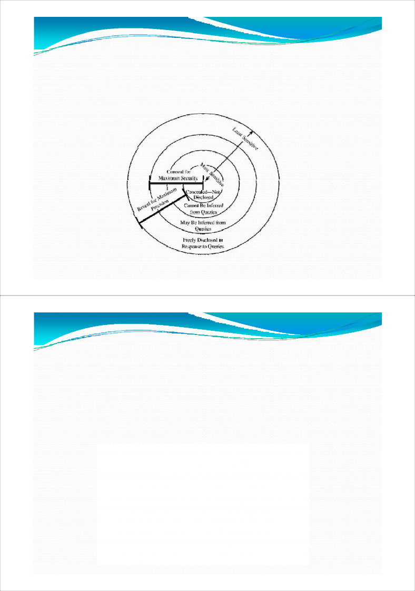
Direct Attack
A user tries to determine values of sensitive fields by seeking them directly with queries that yield few records.
A sensitive query might be List NAME
where SEX=M ∧ DRUGS=1
This query discloses that for record ADAMS, DRUGS=1. However, it is an obvious attack because it selects people for whom DRUGS=1, and the DBMS might reject the query because it selects records for a specific value of the sensitive attribute DRUGS.
51
Direct Attack (Cont’d)
A less obvious query is List NAME
where (SEX=M ∧ DRUGS=1) ∨
(SEX≠M ∧ SEX ≠ F) ∨
(DORM=AYRES)
This query still retrieves only one record, revealing a name that corresponds to the sensitive DRUG value. The DBMS needs to know that SEX has only two possible values so that the second clause will select no records. Even if that were possible, the DBMS would also need to know that no records exist with DORM=AYRES, even though AYRES might in fact be an acceptable value for DORM. 52
Direct Attack (Cont’d)
Do not reveal results when a small number of people make up a large proportion of a category.
The rule of "n items over k percent" means that data should be withheld if n items represent over k percent of the result reported.
53
Indirect Attack
Sum - An attack by sum tries to infer a value from a reported sum.
Count - The count can be combined with the sum to produce some even more revealing results.
Mean - The arithmetic mean (average) allows exact disclosure if the attacker can manipulate the subject population.
Median
54
55
Tracker Attacks
A tracker attack can fool the database manager into locating the desired data by using additional queries that produce small results.
The tracker adds additional records to be retrieved for two different queries; the two sets of records cancel each other out, leaving only the statistic or data desired. The approach is to use intelligent padding of two queries.
In other words, instead of trying to identify a unique value, we request n - 1 other values (where there are n values in the database). Given n and n - 1, we can easily compute the desired
single element. 56
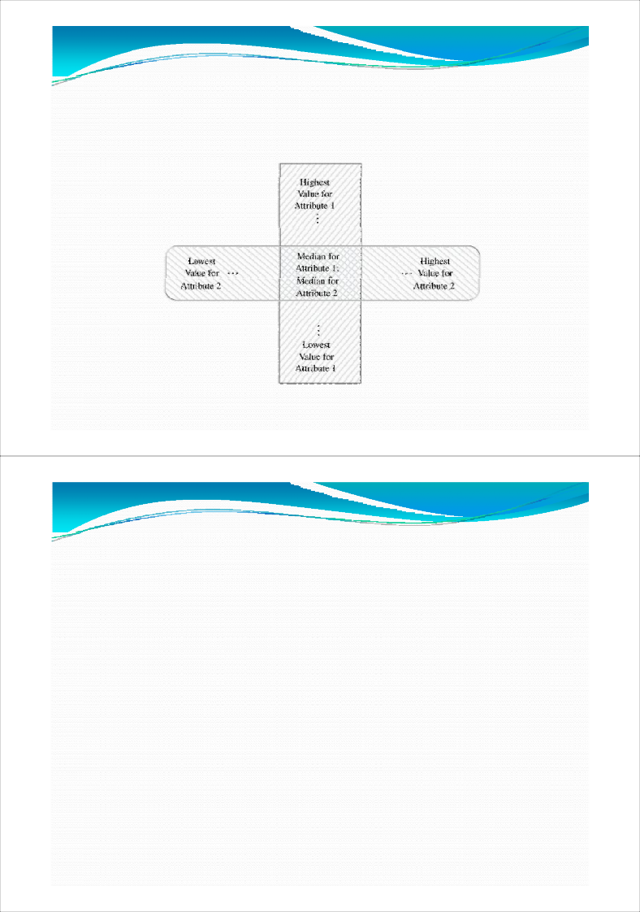
Tracker Attacks (Cont’d)
For instance, suppose we wish to know how many female Caucasians live in Holmes Hall. A query posed might be
count ((SEX=F) (RACE=C) (DORM=Holmes))
The database management system might consult the database, find that the answer is 1, and refuse to answer that query because one record dominates the result of the query.
57
Tracker Attacks (Cont’d)
The query
q=count((SEX=F) ∧ (RACE=C) ∧ (DORM=Holmes)) is of the form
q = count(a ∧ b ∧ c)
By using the rules of logic and algebra, we can transform this query to
q = count(a ∧ b ∧ c) = count(a) - count(a ∧ ¬(b ∧ c))
58
Tracker Attacks (Cont’d)
Thus, the original query is equivalent to count (SEX=F)
minus
count ((SEX=F) ∧ ((RACE ≠ C) ∨ (DORM ≠ Holmes)))
59
Controls for Statistical Inference Attacks
Suppression - sensitive data values are not provided; the query is rejected without response.
Concealing - the answer provided is close to but not exactly the actual value.
60
Controls for Statistical Inference Attacks (Cont’d)
These two controls reflect the contrast between security and precision.
With suppression, any results provided are correct, yet many responses must be withheld to maintain security.
With concealing, more results can be provided, but the precision of the results is lower.
The choice between suppression and concealing depends on the context of the database.
61
Random Sample
With random sample control, a result is not derived from the whole database; instead the result is computed on a random sample of the database.
The sample chosen is large enough to be valid.
Random Data Perturbation
It is sometimes useful to perturb the values of the database by a small error.
Generate a small random error term εi and add it to xi for statistical results.
62
Query Analysis
A more complex form of security uses query analysis.
Here, a query and its implications are analyzed to determine whether a result should be provided.
63
Conclusion on the Inference Problem
No perfect solutions to the inference problem.
The approaches to controlling it
Suppress obviously sensitive information.
Track what the user knows.
Disguise the data.
64
Aggregation
Building sensitive results from less sensitive inputs.
Data mining is the process of sifting through multiple databases and correlating multiple data elements to find useful information
65
Multilevel Databases
The Case for Differentiated Security
Name
Department
Salary
Phone
Performance
Rogers
training
43,800
4‐5067
A2
Jenkins
research
62,900
6‐4281
D4
Poling
training
38,200
4‐4501
B1
Garland
user services
54,600
6‐6600
A4
Hilten
user services
44,500
4‐5351
B1
Davis
administration
51,400
4‐9505
A3
66
The Case for Differentiated Security (Cont’d)
Three characteristics of database security emerge.
The security of a single element may be different from the security of other elements of the same record or from other values of the same attribute. This situation implies that security should be implemented for each individual element.
Two levels sensitive and non-sensitive are inadequate to represent some security situations. Several grades of security may be needed.
The security of an aggregate a sum, a count, or a group of values in a database may differ from the security of the individual elements. The security of the aggregate may be higher or lower than that of the individual elements.
67
Proposals for Multilevel Security
Separation
Partitioning
The database is divided into separate databases, each at its own level of sensitivity.
This control destroys a basic advantage of databases: elimination of redundancy and improved accuracy through having only one field to update.
It does not address the problem of a high-level user who needs access to some low-level data combined with high-level data.
68
Separation (Cont’d)
Encryption
If sensitive data are encrypted, a user who accidentally receives them cannot interpret the data.
69
Cryptographic Separation: Different Encryption Keys. Cryptographic Separation: Block Chaining
70
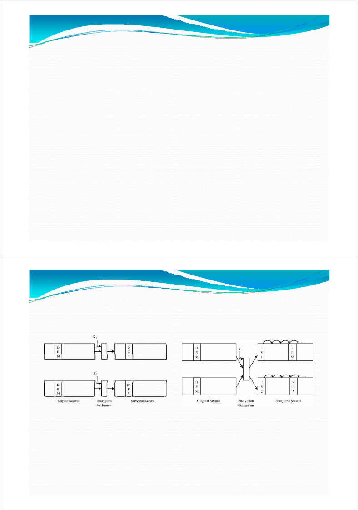
Separation (Cont’d)
Integrity Lock
First proposed at the U.S. Air Force Summer Study on Data Base Security [AFS83].
The lock is a way to provide both integrity and limited access for a database.
The operation was nicknamed "spray paint" because each element is figuratively painted with a color that denotes its sensitivity.
71
Separation (Cont’d)
Integrity Lock (Cont’d)
The sensitivity label should be
unforgeable, so that a malicious subject cannot create a new sensitivity level for an element
unique, so that a malicious subject cannot copy a sensitivity level from another element
concealed, so that a malicious subject cannot even determine the sensitivity level of an arbitrary element
72
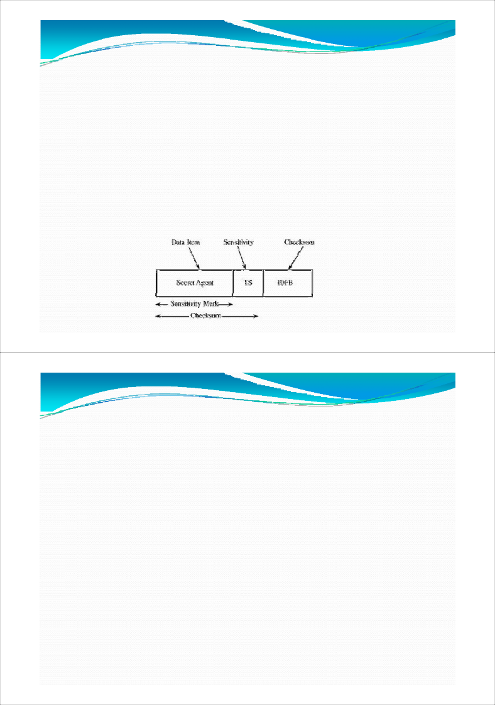
Separation (Cont’d)
Integrity Lock (Cont’d)
The third piece of the integrity lock for a field is an error-detecting code, called a cryptographic checksum.
73
Separation (Cont’d)
Sensitivity Lock
A sensitivity lock is a combination of a unique identifier (such as the record number) and the sensitivity level.
Because the identifier is unique, each lock relates to one particular record.
Many different elements will have the same sensitivity level.
A malicious subject should not be able to identify two elements having identical sensitivity levels or identical data values just by looking at the sensitivity level portion of the lock.
74
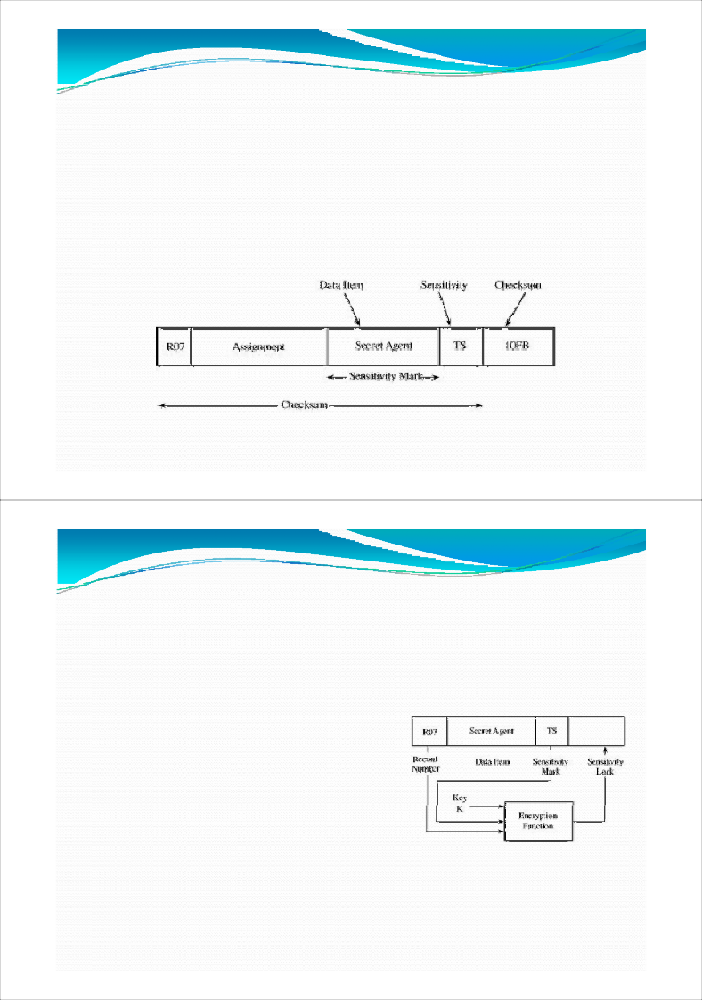
Designs of Multilevel Secure Database
Integrity Lock
A short-term solution to the security problem for multilevel databases.
The intention was to be able to use any (untrusted) database manager with a trusted procedure that handles access control.
The sensitive data were obliterated or concealed with encryption that protected both a data item and its sensitivity.
75
Trusted Database Manager
76
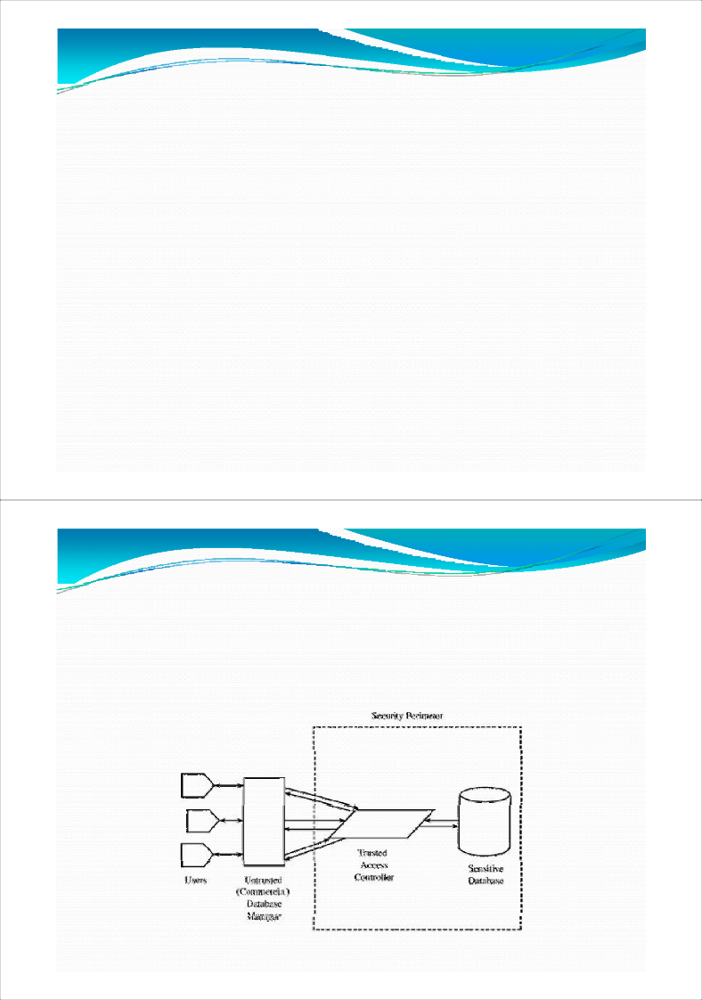
Designs of Multilevel Secure Database
Integrity Lock (Cont’d)
The efficiency of integrity locks is a serious drawback.
The space needed for storing an element must be expanded to contain the sensitivity label.
The processing time efficiency of an integrity lock.
The untrusted database manager sees all data
77
Trusted Front End
Trusted front end is also known as a guard and operates much like the reference monitor
78
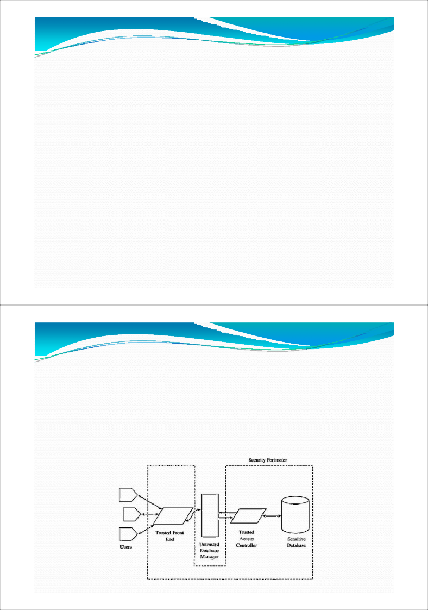
Trusted Front End (Cont’d)
A user identifies himself or herself to the front end; the front end authenticates the user's identity.
The user issues a query to the front end.
The front end verifies the user's authorization to data.
The front end issues a query to the database manager.
The database manager performs I/O access, interacting with low- level access control to achieve access to actual data.
The database manager returns the result of the query to the trusted front end.
79
Trusted Front End (Cont’d)
The front end analyzes the sensitivity levels of the data items in the result and selects those items consistent with the user's security level.
The front end transmits selected data to the untrusted front end for formatting.
The untrusted front end transmits formatted data to the user.
80
Commutative Filters
A process that forms an interface between the user and a DBMS.
The filter reformats the query so that the database manager does as much of the work as possible, screening out many unacceptable records.
The filter then provides a second screening to select only data to which the user has access.
81
82
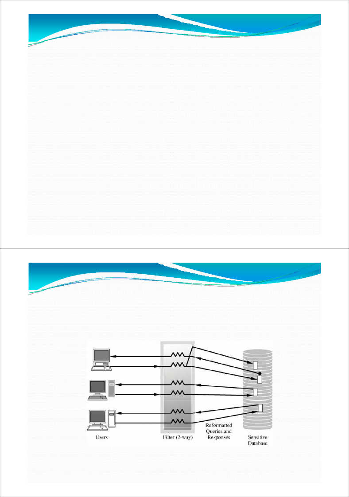
Distributed Databases
Distributed or federated database
A trusted front end controls access to two unmodified commercial DBMSs:
one for all low-sensitivity data and
one for all high-sensitivity data.
The distributed database design is not popular because the front end, which must be trusted, is complex, potentially including most of the functionality of a full DBMS itself.
83
Window/View
One of the advantages of using a DBMS for multiple users of different interests (but not necessarily different sensitivity levels) is the ability to create a different view for each user.
Each user is restricted to a picture of the data reflecting only what the user needs to see.
A window (or a view) is a subset of a database, containing exactly the information that a user is entitled to access.
A view can represent a single user's subset database so that all of a user's queries access only that database.
84
(a) Airline's View.
FLT#
ORIG
DEST
DEP
ARR
CAP
TYPE
PILOT
TAIL
362
JFK
BWI
0830
0950
114
PASS
Dosser
2463
397
JFK
ORD
0830
1020
114
PASS
Botto ms
3621
202
IAD
LGW
1530
0710
183
PASS
Jevins
2007
749
LGA
ATL
0947
1120
0
CARG O
Witt
3116
286
STA
SFO
1020
1150
117
PASS
Gross
4026
…
…
85
(b) Travel Agent's View.
FLT
ORIG
DEST
DEP
ARR
CAP
362
JFK
BWI
0830
0950
114
397
JFK
ORD
0830
1020
114
202
IAD
LGW
1530
0710
183
286
STA
SFO
1020
1150
117
…
…
86
Secure Database Decomposition
87
Data Mining
Databases are great repositories of data. More data are being collected and saved.
But to find needles of information in those vast fields of haystacks of data requires intelligent analyzing and querying of the data.
Indeed, a whole specialization, called data mining, has emerged.
In a largely automated way, data mining applications sort and search thorough data.
88
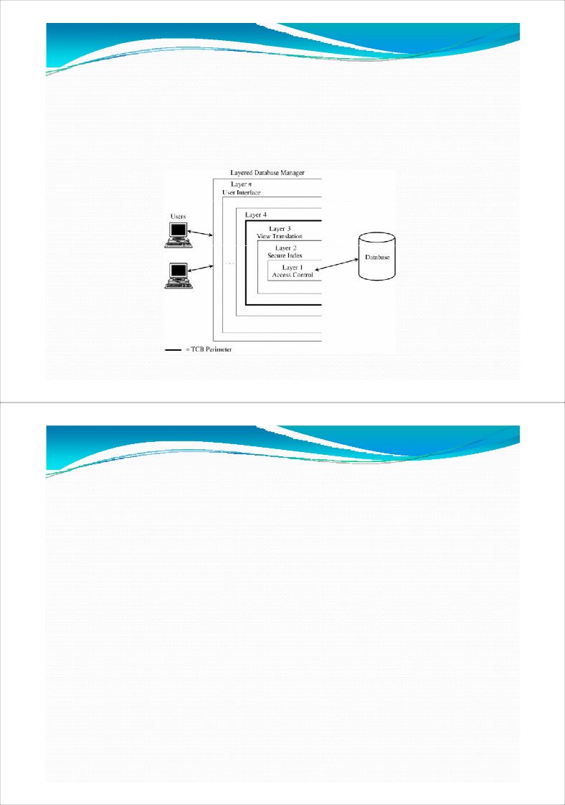
Data mining uses statistics, machine learning, mathematical models, pattern recognition, and other techniques to discover patterns and relations on large datasets.
Data mining tools use association (one event often goes with another), sequences (one event often leads to another), classification (events exhibit patterns, for example coincidence), clustering (some items have similar characteristics), and forecasting (past events foretell future ones).
Data mining presents probable relationships, but these are not necessarily cause-and-effect relationships.
89
Privacy and Sensitivity
Because the goal of data mining is summary results, not individual data items, you would not expect a problem with sensitivity of individual data items.
Unfortunately that is not true. Why ???
90
Summary of Database Security
Address three aspects of security for database management systems:
Confidentiality and integrity problems specific to database applications
Confidentiality can be broken by indirect disclosure of a negative result or of the bounds of a value.
Integrity of the entire database is a responsibility of the DBMS software
The inference problem for statistical databases
Arise from the mathematical relationships between data elements and query results.
Problems of including users and data of different sensitivity levels in one database.